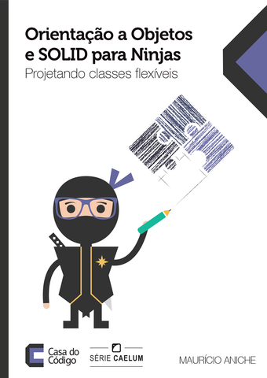

Sobre o livro "Orientação a Objetos e SOLID para Ninjas"
Uma primeira impressão sobre a obra de Maurício Aniche, "Orientação a Objetos e SOLID para Ninjas - projetando classes flexíveis"

Motivação
Há algum tempo vem me preocupando (e confesso, com certo atraso), um estudo mais formal sobre práticas de programação. Entre problemas de padrão e qualidade de projeto, decidi procurar algo sobre a qualidade, e especialmente os princípios SOLID.
E busca, busca, busca, pensei, "deve ter algo na Casa do Código". E tinha mesmo! Achei o livro do Maurício Aniche, "Orientação a Objetos e SOLID para Ninjas - projetando classes flexíveis".
Tiro certeiro
E melhor que achar um livro que introduza no assunto, é achar um que dê os caminhos a seguir após a sua leitura.
A cada capítulo, algum problema de arquitetura é mostrado, e o princípio se apresenta naturalmente. Os exemplos não são bobagens abstratas (nada de foo e bar), mas tratam, por todo o livro, de um problema bem comum e conhecido de nós programadores brasileiros: emissão de nota fiscal.
Além de bons princípios, também mostra coisas que não cheiram muito bem, os "code smells", e como tratá-los.
Mais benefícios
E um ponto importante que o Henrique Lobo, tem alertado é sobre referências bibliográficas, veja esse e esse outro texto.
As referências estão não só como uma lista morta ao final da obra. Elas vão surgindo conforme a necessidade, e sim, ao final há uma pequena lista para se aprofundar no assunto.
Era tudo que eu queria e preciso.
E também o autor inicia um trato sobre métricas para código fonte.
Ponto negativo
Esse "para Ninjas" foi totalmente desnecessário no título. Inclusive causa uma má e errada impressão acerca do autor e do texto, que são muito bons. Felizmente não me deixei levar por esse meu preconceito, e o deslize foi só no título mesmo.
Sobre o autor
Mais fácil colar aqui o que está no site dele (que inclusive tem vários textos interessantes):
Education. I got my PhD from University of São Paulo (2016), where I proposed context-aware quality assessment for MVC architectures. I got my MSc degree on Computer Science at University of São Paulo (2012).
Teaching. Software Testing and Quality (Computer Science bachelor), Software Architecture (Softwre Engineering MSc track), Software Engineering Methods (Computer Science minor).
Industry experience. I worked as software developer for Caelum (5 years), Locaweb (1 year), and VeriFone (3 years). Together with Caelum, I co-founded Alura, the most popular e-learning platform for software engineers in Brazil.